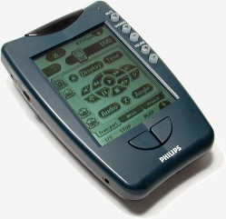

They don't make 'em like that any more: The Philips Pronto remote control

Many consumer electronic appliances have remote controls. A common feature of most UK households -- probably most households anywhere on Earth -- is a basket full of remote controls. My AV/hi-fi system has about a dozen components, each with its own remote control. I don't think this is particularly unusual.
In the 1990s, a number of manufacturers started producing 'universal' remotes, that could control multiple devices. Usually these devices were selected from a (short) list of popular appliances. To be fair, the market for home entertainment devices wasn't as expansive in the 90s as it is now; but if you owned a device that was unsupported, you could fall back on a 'learning' remote, that you could program from the device vendor's own remote.
And so things remained, until home entertainment systems became really complicated. Most 'universal' remotes could only control three or four devices, and there was no way to control multiple devices using a single button-press.
Then, in 1998, the Pronto came along, and changed everything.
The Pronto wasn't just a 'learning' remote -- it was a fully programmable, customizable remote. It could support any (realistic) number of devices and, best of all, it could control more than one at the same time. What this meant is that, on the home screen, I could press the 'XBox' button, and it would turn on the XBox and my video projector, then turn on the AV amplifier and set it to the configuration I liked for video games. I could even program it to control things I had built myself, like my home-made Raspberry Pi-based media player. Some people even set theirs up to control home lighting and heating.
The Pronto wasn't just better by miles than anything available at the time -- it was better than anything that is available today. That wasn't just because of its sophistication.
- The Pronto had a large, touch-sensitive screen, and you could lay out the controls and menus however you liked. There was no more guessing what the button with the red dot did, when controlling a particular appliance -- the button on screen said "Subwoofer volume up", or whatever.
- The Pronto had a charging dock, and it was part of the standard product, not an add-on. But it could also be powered by standard, replaceable AA batteries. So you'd never find it unusable.
- It had an enormous IR emitter, that could reach appliances even in different rooms. No single room was too large for it.
- In its heyday, the Pronto had a large, vigorous community around it. Although you could program the Pronto any way you wanted, in practice you didn't have to, unless you were controlling something home-made: somebody would have already done it, and released a suitable configuration file.
The Pronto was an enthusiast's device, to be sure. But if you have a home A/V set-up with a dozen separate appliances, you had to be an enthusiast. The Pronto was set supplied with a comprehensive configuration tool (alas, for Windows only), which was well-documented and relatively easy to use. Not only could you assign any kind of action to any screen button, you could draw your own buttons, and assign graphic images to them. So if you wanted to select a particular TV channel, for example, you could assign the channel's logo to a button.
The original Prontos had monochrome screens and were fairly chunky units. Later models had full colour screens, and were were of roughly smartphone size. To make the unit itself more compact, some models had smaller screens, but to my mind that detracted from the main purpose of the device: you could have all the common controls on one screen.
Although the Pronto notionally only supported Windows for programming, there was enough of an enthusiast following for third-party programmers to be developed. I used a Java program called 'Tonto' for this. It still works, but I see that it hasn't been updated for about ten years. Since that Pronto went out of production in 2010, that's hardly surprising.
So what happened to the Pronto? There was no significant competition, so I can only imagine it was market stagnation. Eventually, everybody who wanted a fully-programmable touch-screen remote had one. Since the same remote could control almost anything, the introduction of new devices into the market did not increase sales. Probably a few people upgraded to the later Prontos that had colour screens, but I was perfectly happy with my monochrome unit. Since they lasted forever (mine is still working fine) nobody needed to replace one.
I suspect that, over time, simpler universal controllers like the Logitech Harmony range took away some of the Pronto's market. The Harmony never was a serious competitor for the Pronto, but it could do some of what the Pronto did, and was easier to set up. The set-up process was Web-based, but still required software to be installed locally. The Harmony shared with the Pronto the ability to control multiple devices with a single button-press, but it was nowhere near as flexible.
I was rather hoping I could fall back on the Harmony when my Pronto finally gave up the ghost -- but it turns out that Harmony is dead as well. This is a bigger problem than the demise of the Pronto, because there's no way (so far as I know) to program the Harmony except using Logitech's web-based system. So once that finally closes down, all Harmony devices will be frozen in their current configuration.
It's interesting to speculate on why the Harmony range was abandoned, and whether the reasons are the same as for the Pronto. To some extent I suspect that market stagnation is a factor for both products. Since both products are long-lived, and can accommodate new devices, expanding the market means waiting for new consumers to be born. The usual way that vendors deal with market stagnation is to introduce new products that are better, faster, shinier, more attractive, etc. After all, Lenovo and Dell have no problem shifting laptop computers, even though everybody has one already.
But the Pronto and the Harmony are both victims of their own success -- they can't easily be improved, given what they do. Both are perfectly suited for their current application. The only reason to buy a new one is because the old one has failed, and both products could outlive their owners. It costs the manufacturers money to maintain production facilities, and sales of new units probably won't balance those costs.
The moral of this story, I guess, is this: if you buy something that you really like, that works well, and is built to last look after it. You probably won't be able to replace it.